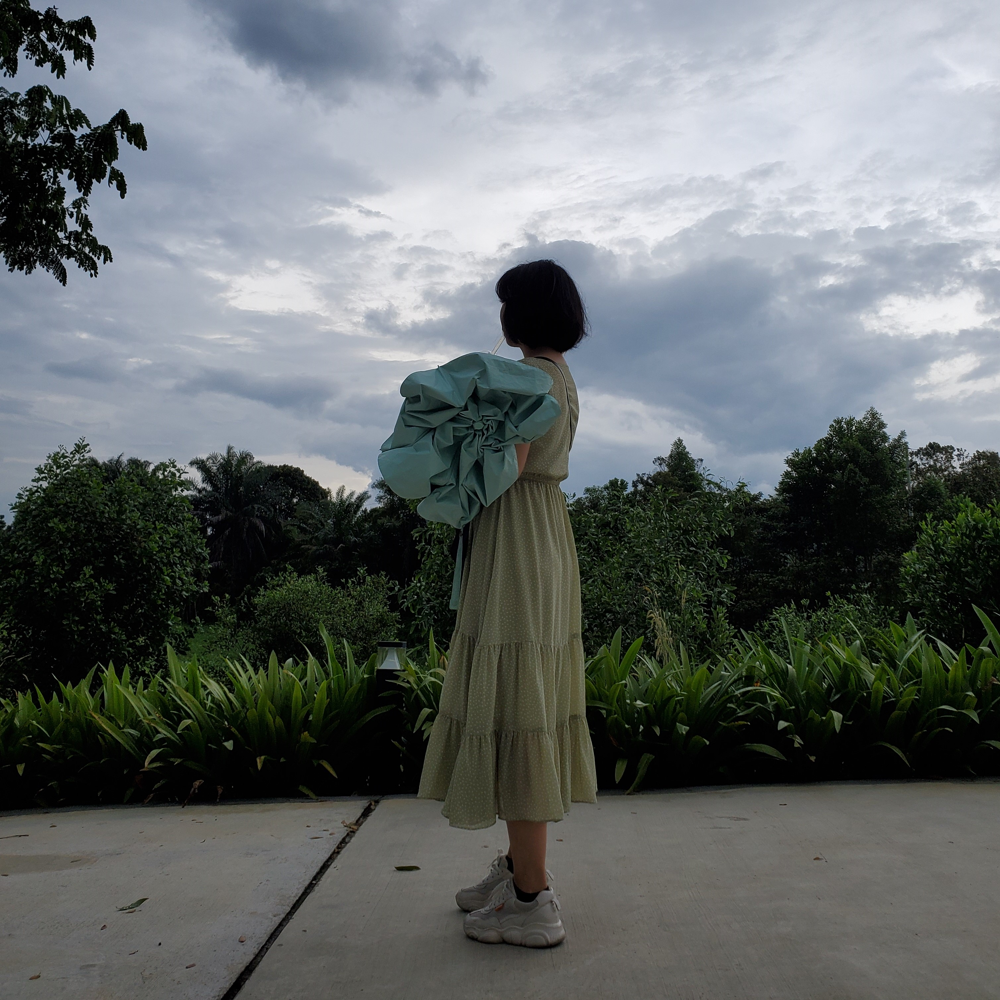

Welcome to my styled page! And I'd like to introduce myself to you!
Name: Yao Lan
Gender: Female
Age: 18
Character: maybe outgoing, steady and helpful
As a changeable girl, I have many different hobbies. When I am alone, sometimes I like to listen to soft music and read all kinds of classics from time to time, and sometimes I like to follow the ups and downs of the movie plot with holding popcorn. When I meet with friends, I not only like to sing with them but also enjoy sitting on the lawn with them talking endlessly. Besides, I also like playing with pets, eating delicious dessert and doing exercise in the morning. I think it's these bits and pieces that make up the most real me.
During elementary school, I participated in composition contests many times.
During junior high school, I have participated in the track and field events of the school games many times and achieved good results. At the same time, I also worked in the Propaganda Department of the Student Union and helped organize many events. During my stay at school, I was awarded the honor of a municipal-level Miyoshi student.
During high school, I retained the habit of actively participating in track and field events, and my performance was still good. At the same time, I have also won many honors such as outstanding class cadre, Miyoshi student, Lei Feng Spirit Award, etc.
In the university life so far, I joined the debate team and participated in and watched several debate contests.
In the first year, I want to participate in and obverse as many as possible debate competitions. At the same time, I'd like to study C and C++ Languages by myself and improve my degree of advanced mathematics and spoken English.
In the second year, I want to learn TOEFL on my own and study advance mathematics further. In that year, I also want to join in the Music Club to enjoy the pretty rhythm.
Made 30 December 2019